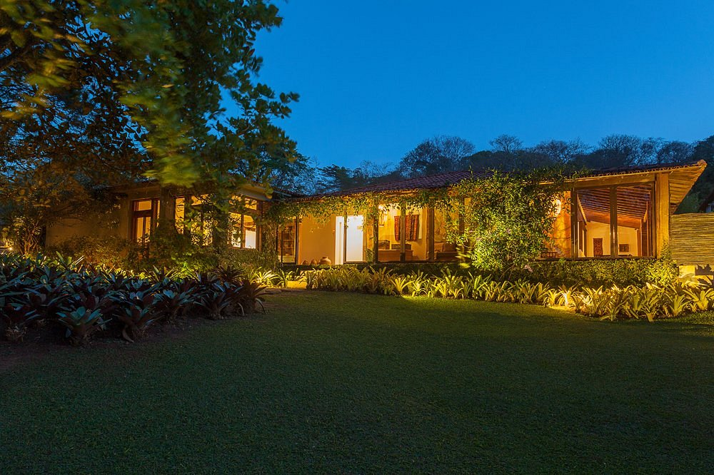

Estabelecimento
Os hóspedes são recebidos por uma atmosfera acolhedora, onde a rusticidade se encontra com o conforto moderno. A arquitetura local, inspirada nas tradições da região, se harmoniza com detalhes contemporâneos, criando um ambiente que é ao mesmo tempo autêntico e elegante. Os materiais naturais, como madeira e pedra, ecoam a paisagem circundante, trazendo uma sensação de integração com o entorno.
Os quartos, cuidadosamente decorados, oferecem vistas deslumbrantes das montanhas ou dos jardins exuberantes que circundam a hospedaria. Cada espaço é um convite ao relaxamento e ao descanso, com camas macias, lençóis de algodão puro e detalhes pensados para proporcionar o máximo de conforto aos hóspedes.
Nos espaços comuns, como a sala de estar e o terraço panorâmico, os viajantes têm a oportunidade de se reunir e compartilhar experiências enquanto contemplam a beleza natural que os rodeia. Uma lareira aconchegante convida a momentos de conversa e convívio, enquanto os jardins cuidadosamente cuidados oferecem espaços tranquilos para meditação e contemplação.
Nos espaços comuns, como a sala de estar e o terraço panorâmico, os viajantes têm a oportunidade de se reunir e compartilhar experiências enquanto contemplam a beleza natural que os rodeia. Uma lareira aconchegante convida a momentos de conversa e convívio, enquanto os jardins cuidadosamente cuidados oferecem espaços tranquilos para meditação e contemplação.